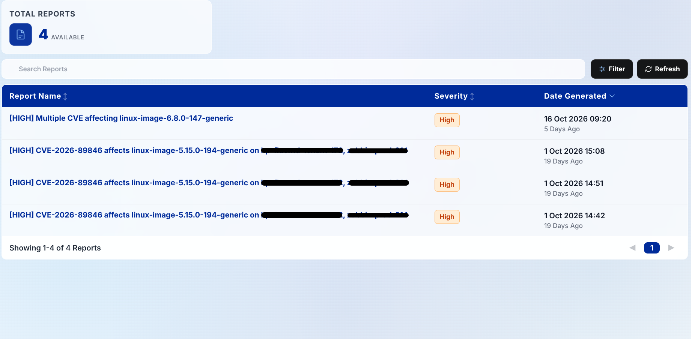
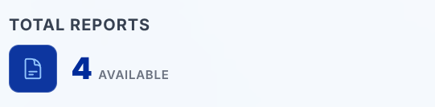
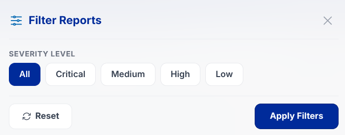
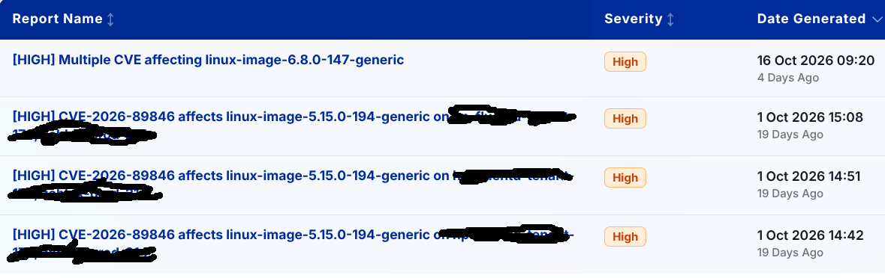
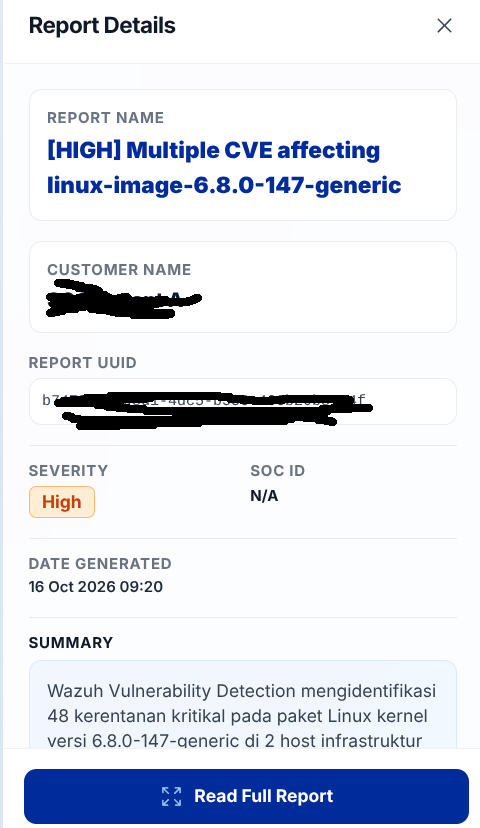
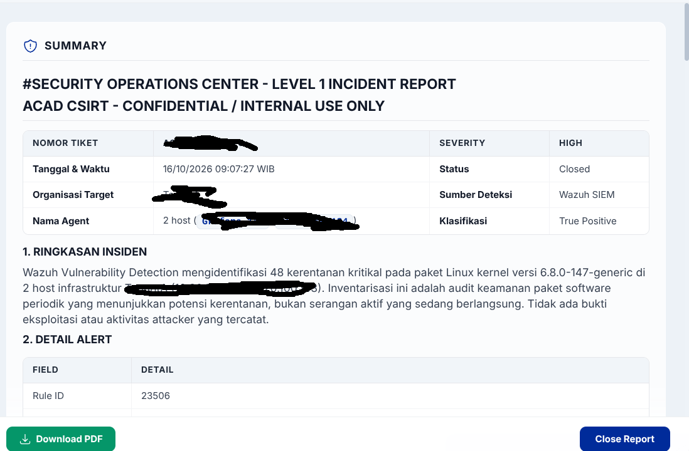
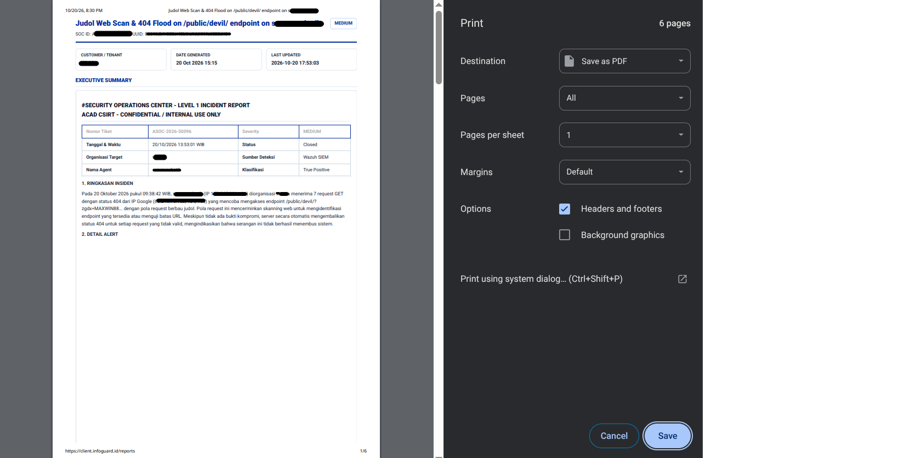

Reports
The Reports module presents official incident case dossiers orchestrated and documented via DFIR-IRIS. Users can audit formal case progress, verify compromised assets, and review executive mitigation summaries.

8.1. Reports Metrics (Total Reports Card)

The top summary card reflects the aggregate volume of formal incident reports currently available for the authenticated tenant.
8.2. Search & Advanced Filter Controls

- Quick Search: Search field (Search Reports) matching report headlines, executive summaries, or mitigation text.
- Severity Filter: Restricts report rows by urgency tier (Critical, High, Medium).
8.3. Reports Table

The table displays the following key attributes:
- Report Name: Formal title of the forensic incident investigation.
- Severity: Urgency classification badge (Critical, High, Medium, Low).
- Date Generated: Formal publication timestamp of the verified report.
8.4. Report Detail Drawer
Clicking any report entry opens a technical investigation drawer displaying:

- Report Name: Full formal document title.
- Customer Name: Registered tenant name (e.g., tenant a).
- Report UUID: Globally unique audit identifier for forensic tracking and regulatory compliance.
- Severity & SOC ID: Two-column grid with urgency badge and official SOC ticket number (e.g.,
SOC-2026-001or N/A). - Date Generated: Publication timestamp.
- Summary: Executive forensic overview equipped with an expandable Read More / Show Less toggle.
- Recommended Action: Green-highlighted callout box detailing numbered, concrete mitigation directives for system administrators.
- Affected Devices: Inventory of compromised endpoint hosts (showing count, hostnames, and IP addresses).
- "Read Full Report" Button: Action button at the drawer base launching the complete Markdown document modal.
8.5. View Full Report & Download PDF
Renders the full investigative dossier with comprehensive Markdown formatting (headings, subheadings, telemetry tables, and code snippets).

"Download PDF" Button: Triggers the browser's automated print dialog pre-configured with standardized A4 portrait formatting, ready for archiving as an official Confidential Security Assessment document.
